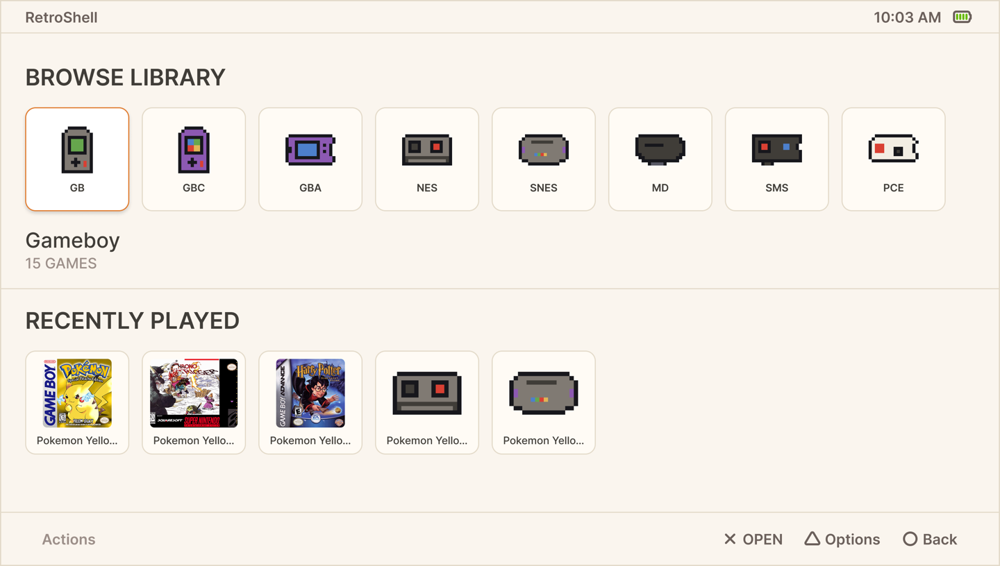

Built for PSP
RetroShell was built around the PSP front and center, not a port.
RetroShell turns your PSP into a clean retro library. Browse by system, jump back into recent games, and launch supported emulators from one simple home screen.
Requires custom firmware. Games and BIOS files are not included.

RetroShell is designed around the PSP’s screen, buttons, memory limits, and homebrew ecosystem. It keeps the experience focused so you can choose a system, pick a game, and play.
RetroShell was built around the PSP front and center, not a port.
Multiple emulators baked into a single seamless experience.
RetroShell focuses on systems and cores that make sense on PSP.
Copy the RetroShell folder to your PSP memory stick.
Place ROMs into the matching folders inside /ROMS/.
Open RetroShell from Game → Memory Stick.
Current development status. Labels may change as real-hardware testing continues.
RetroShell is open-source homebrew. Games and BIOS files are not included.